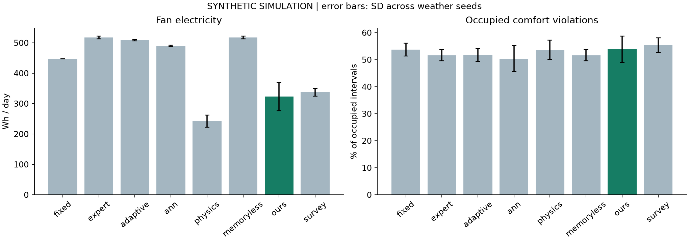

CE F417 + CE F423 / SYNTHETIC COURSE PROTOTYPE
Preference-aware cooling for student hostels
One project combining Applications of AI in Civil Engineering and Green Buildings and Energy Conservation. Controls: fan, window and curtain. Advisory software; no physical actuators.
Evidence statusSYNTHETIC SIMULATION - no human pilot or measured savings. Preference backend: offline explicit-phrase parser (not an LLM). This work completes the computational prototype and reproducible simulated comparison; a consented human pilot remains future work.
Abstract
The prototype tests whether activity-specific preference memory can inform low-energy room-control suggestions. A one-node resistance-capacitance room model predicts temperature; a moisture balance estimates relative humidity. A fuzzy comfort model and a discrete genetic algorithm trade comfort, fan electricity, noise and switching. Fixed, expert, adaptive, neural and physics-only baselines are compared on identical seeded weather. A one-time-survey ablation isolates memory updates. Human hypotheses remain untested.
Research questions
F417: can conversation retain changing study/sleep preferences, and does that improve acceptance? F423: does adding room physics improve the comfort-energy trade-off? Conversation-versus-survey superiority, real energy savings and human acceptance require field data.
Methods
Room: 12 m², 3 m height, west orientation, UA=45 W/K, effective C=2 MJ/K, 2 m² window, glazing gain factor 0.6. All are illustrative assumptions. The 15-minute analytical heat balance is C dT/dt = (UA + rho cp Vdot)(Tout-T) + Qsolar + Qinternal + Pfan. Fans add sensible heat; their perceived cooling is represented separately.
A 60-minute constant-forcing rollout scores feasible actions. The GA uses population 10, eight generations, tournament selection, elitism, crossover and mutation. At most 24 actions allow an exhaustive audit; the returned GA action is retained even if the audit finds a better action. Sleep fan limits and closed-window constraints apply to all policies.
- fixed: Fixed schedule (F423 B1; illustrative, not GRIHA/LEED certification).
- expert: Expert rules (F417 B1).
- adaptive: Adaptive reference + rules outside scope (B2).
- ann: Synthetic-trained ANN (F417 B3).
- physics: Room model only (F423 B3).
- memoryless: Memoryless rule surrogate (offline diagnostic, NOT B4).
- ours: Preference memory + fuzzy comfort + RC + GA.
- survey: One-time preference survey + RC + GA (ablation).
Unavailable or failed runs
- {'method': 'generic_llm', 'reason': 'No real LLM configured. Offline rules are not a generic LLM baseline.'}
Experimental protocol
7 days per seed; seeds [11, 23, 47]; 15-minute steps. Policies start from identical temperatures and share weather, initial explicit constraints and the hidden occupant scenario. Each policy evolves its own room state. All suggestions are automatically applied for comparison; acceptance is evaluated separately. Ours and survey receive the same initial survey, then a scripted mid-trial change is revealed only through conversation to ours. No raw human data is used.
ANN holdout MAE: 0.148 TSV units on 400 synthetic IID samples; 2000 training samples. This is a synthetic fit check. Controller latency excludes preference extraction; extraction latency is separately logged in conversation_evidence.json.
Results
The preference controller used 323.3 Wh/day, with 53.9% synthetic occupied comfort violations. Its fan electricity changed by -27.8% relative to the fixed schedule. Comfort and energy must be assessed together; energy reduction alone does not establish success. Against fixed settings, occupied violations changed by +0.15 percentage points and mean absolute TSV changed from 1.25 to 1.35. This run does not establish the no-comfort-penalty hypothesis.

| Controller | Fan Wh/day | Period fan kWh/m² | Mean |TSV| proxy | Violations | Acceptance proxy | Median ms |
|---|
| fixed | 448.0 | 0.2613 | 1.25 | 53.7% | 52.1% | 0.02 |
| expert | 517.6 | 0.3019 | 1.15 | 51.6% | 51.0% | 0.02 |
| adaptive | 509.0 | 0.2969 | 1.14 | 51.7% | 41.2% | 0.02 |
| ann | 490.2 | 0.2859 | 1.10 | 50.4% | 44.6% | 0.11 |
| physics | 242.1 | 0.1412 | 1.45 | 53.6% | 41.7% | 0.62 |
| memoryless | 517.6 | 0.3019 | 1.15 | 51.6% | 51.0% | 0.02 |
| ours | 323.3 | 0.1886 | 1.35 | 53.9% | 47.5% | 1.94 |
| survey | 337.5 | 0.1969 | 1.41 | 55.4% | 41.6% | 1.97 |
EPI covers fan electricity during this trial only. No annual extrapolation or whole-building claim is made. Away intervals count toward electricity but are excluded from comfort/acceptance denominators. Per-seed data and SD are exported. A small number of weather seeds is not a human sample size.
Hypothesis status and discussion
H1 (conversation vs survey) and H3 (human acceptance) are not established. The scripted preference shift checks memory behavior mechanically. H2 (activity awareness) is implemented with explicit activity inputs rather than inferred routines. H4 (lower energy without reduced comfort) must be evaluated from both columns, and remains a simulated observation, not a validated claim. An actual LLM baseline is omitted until a model is configured; the memoryless rule surrogate is clearly separate.
Limitations
- Uncalibrated one-node RC model; facade irradiance and wind-driven ventilation are proxies.
- Air temperature approximates operative temperature; no radiant sensor, latent heat coupling or CFD.
- ANN trained on synthetic generic occupant labels; no evidence of human generalization.
- Comfort and acceptance derive from a related synthetic oracle; favorable results are not independent validation.
- Ours and survey start from identical simulated survey data; a scripted preference change tests memory mechanically.
- Constant one-hour weather/activity forecast; no guarantee of long-horizon energy optimality.
- Adaptive reference excludes sleep and away; expert fallback explicitly handles those periods.
- No ASHRAE, GRIHA or LEED certification and no autonomous physical device control.
Pilot and ethics plan
Collect at least seven consecutive days of 15-minute indoor/outdoor temperature, RH, facade solar/wind proxies, occupied activity, controls, fan power and optional TSV/accept-reject feedback. Obtain informed opt-in before storage, use pseudonymous IDs, allow export and deletion, and never infer sensitive traits. Calibrate UA and capacitance with chronological training data and report held-out one-step RMSE. Randomize controller periods in a later crossover study and analyze paired comfort and metered-energy outcomes. A 20-50 room deployment is outside the completed scope.
Reproduction
python -m hostel_cooling experiment --days 7 --seeds 11 23 47
Raw exports: summary.json, comparison.csv, runs.csv, trajectories.csv and conversation_evidence.json. See README.md, docs/METHODS.md and docs/PILOT_PROTOCOL.md in the repository.
Sources and design context
The supplied F417 and F423 proposal PDFs define the project scope. The simplified equations are this project's implementation, informed by the sources below; they do not reproduce a certified implementation.
References checked 20 October 2026.